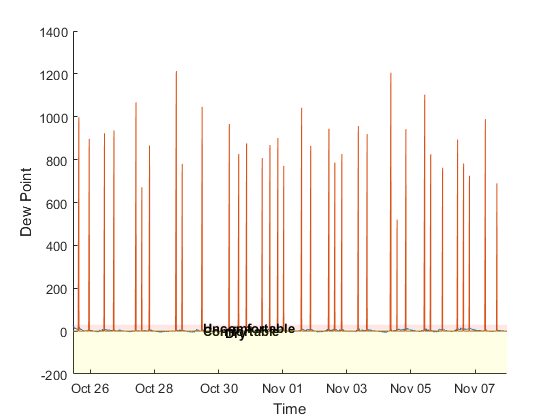

readChannelID = 56612;
dateRange = [datetime('24-Oct-2016'),datetime('today')];
[data,time,channelInfo] = thingSpeakRead(readChannelID,'Fields',1:8,'DateRange',dateRange);
temperatureData = data(:,7);
resistencia = data(:,3);
pressureData = data(:,4);
rainData = data(:,4);
windSpeedData = data(:,5);
windGustData = data(:,6);
windDirectionData = data(:,7);
tempC = temperatureData;
figure
hold on
plot(time, [temperatureData,resistencia])
xlabel('Time')
ylabel('Dew Point')
xlim([datenum(time(1)) datenum(time(end))])
fill([xlim fliplr(xlim)], [8 8 30 30], 'r', 'LineStyle', 'none', 'FaceAlpha', 0.1)
text(0.7*datenum(time(1)) + 0.3*datenum(time(end)), 20, 'Uncomfortable', 'FontWeight','bold')
fill([xlim fliplr(xlim)], [0 0 8 8], 'g', 'LineStyle', 'none', 'FaceAlpha', 0.1)
text(0.7*datenum(time(1)) + 0.3*datenum(time(end)), 5, 'Comfortable', 'FontWeight','bold')
fill([xlim fliplr(xlim)], [min(ylim) min(ylim) 0 0], 'y', 'LineStyle', 'none', 'FaceAlpha', 0.1)
text(0.65*datenum(time(1)) + 0.35*datenum(time(end)), -5, 'Dry', 'FontWeight','bold')
hold off
Warning: Non-numeric data was found. This could mean that you are attempting to
retrieve data from a channel or field that has non-numeric points. Set
'OutputFormat' property to 'table' or 'timetable' to read non-numeric data.
